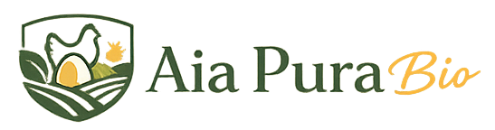
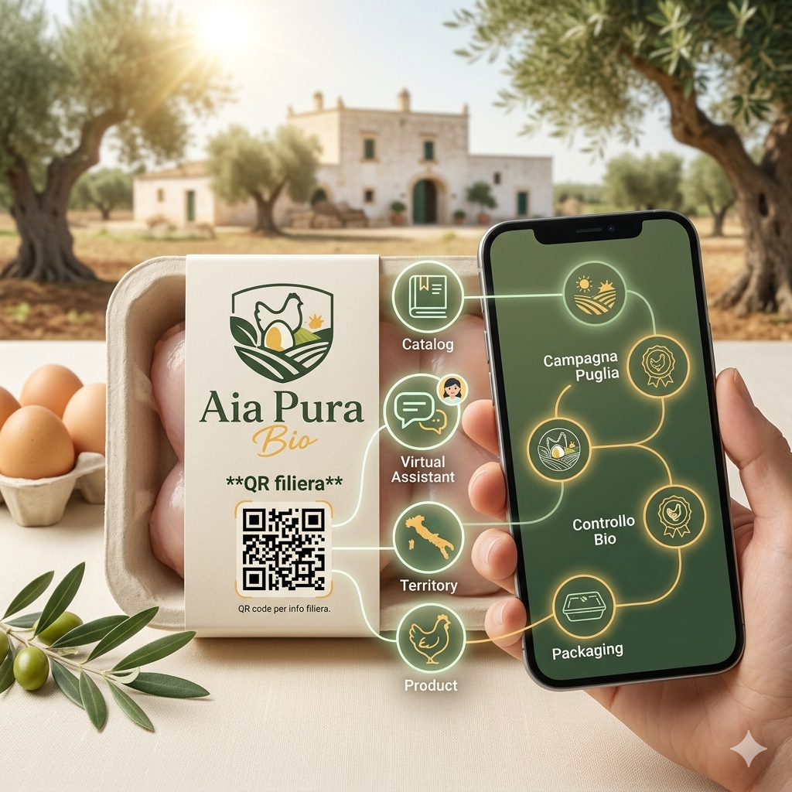
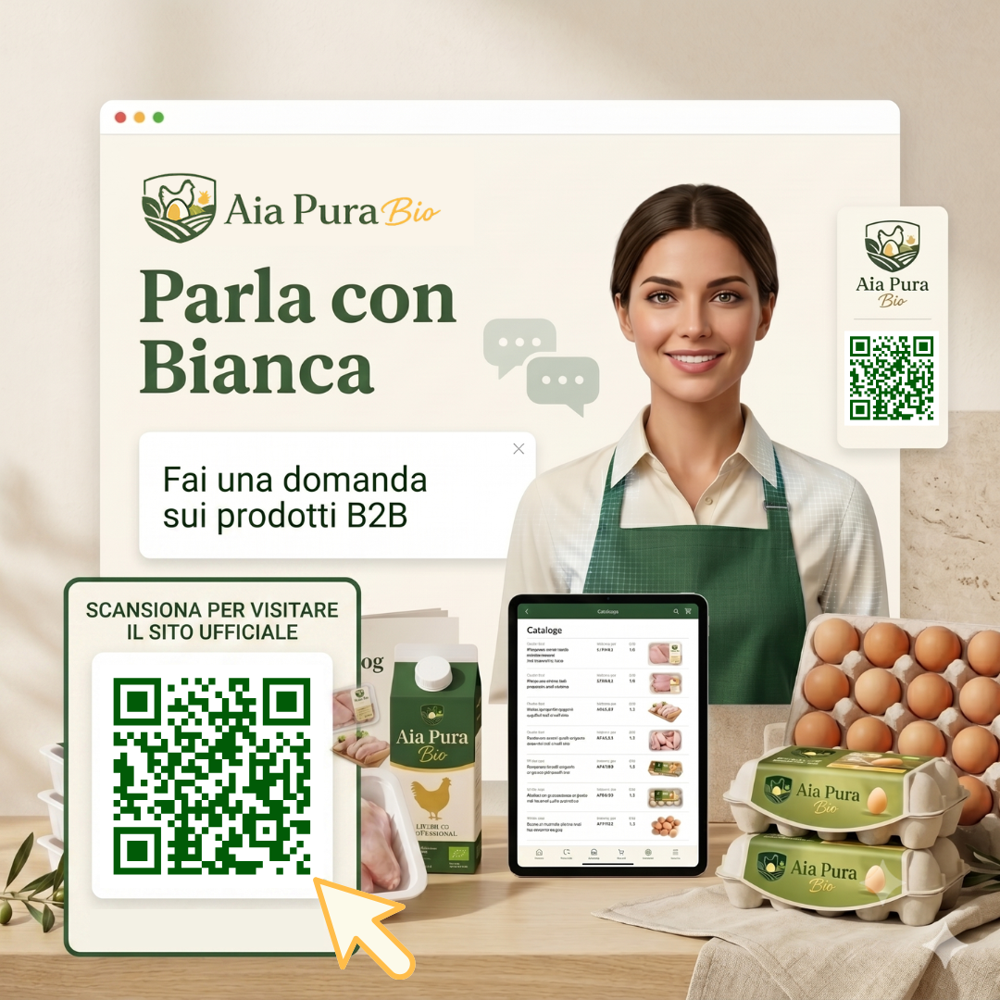
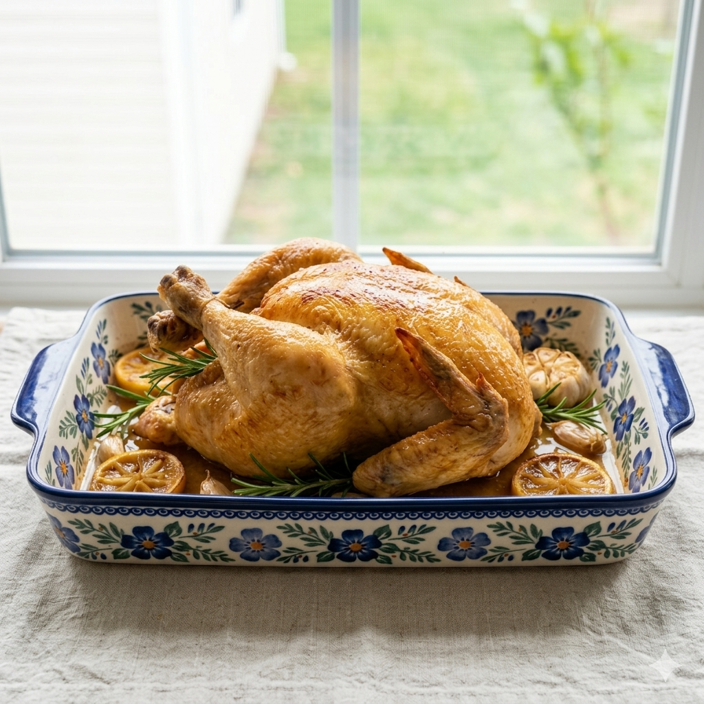
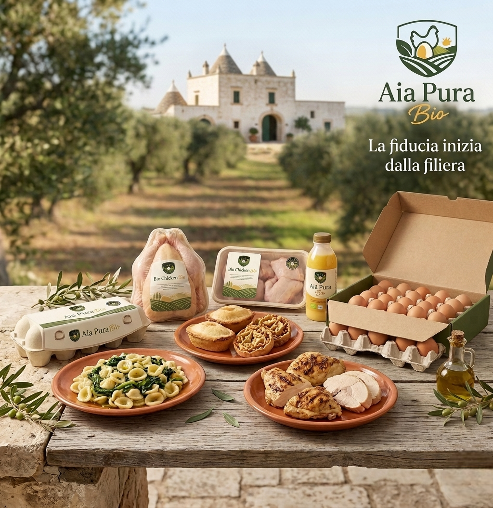
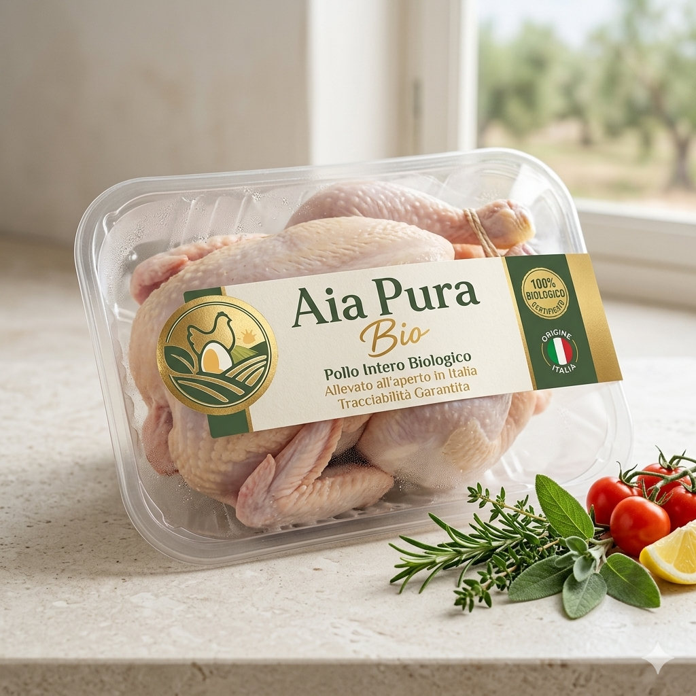
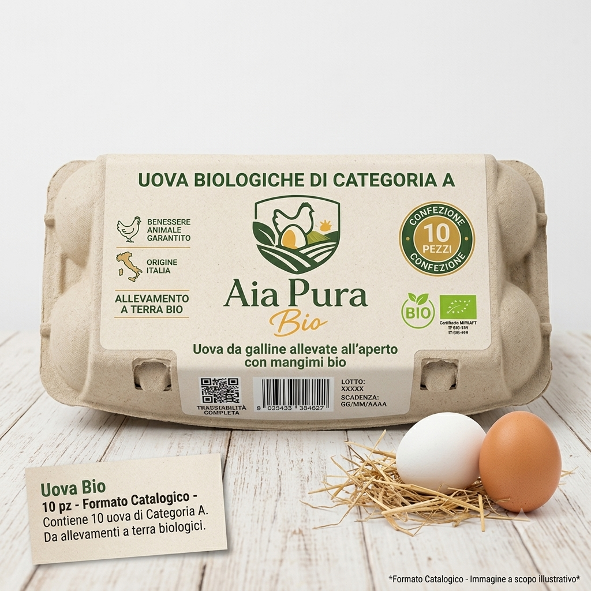
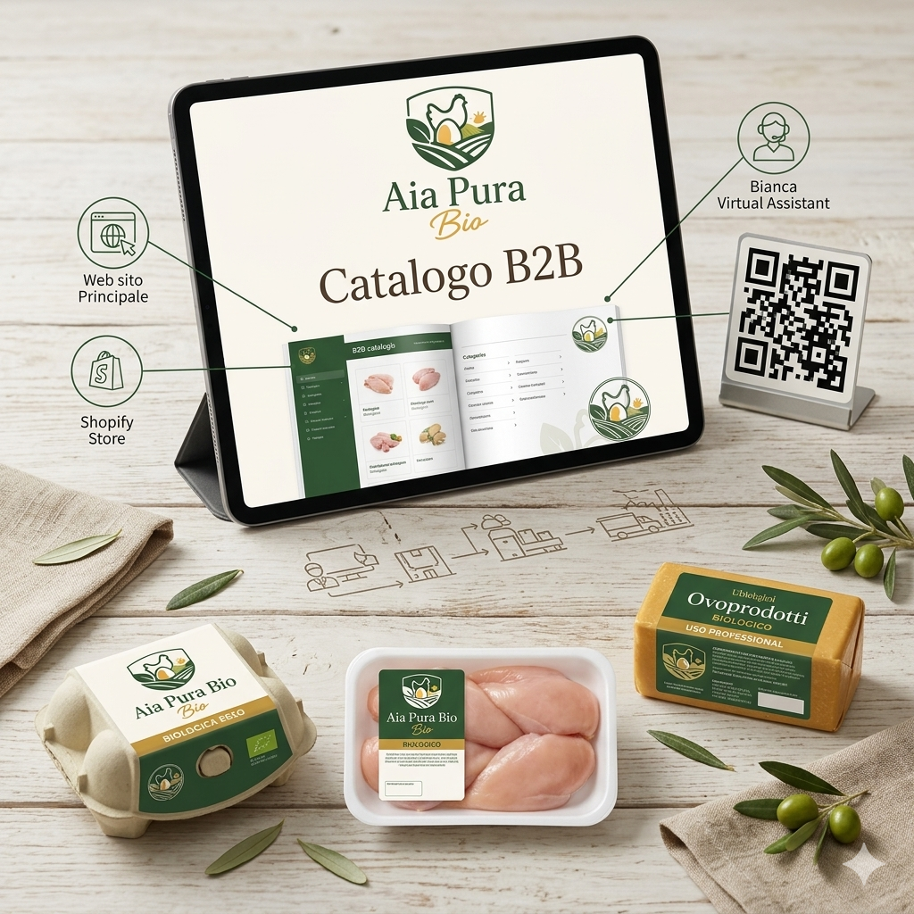

Filiera pugliese
Il territorio come garanzia di autenticità e radici forti.
Content strategy Instagram per una filiera avicola biologica B2B, tra fiducia, territorio, packaging, QR code, Bianca AI e tracciabilità phygital.
Questa pagina traduce il caso Aia Pura Bio in un sistema editoriale Instagram e in una griglia di contenuti prototipali. Aia Pura Bio è uno studio di fattibilità strategica per una filiera avicola biologica a km zero, radicata in Puglia/Brindisi e orientata al target B2B food premium: pasticcerie artigianali, laboratori di pasta fresca, ristorazione selezionata, gastronomie e operatori professionali del food.

Montserrat per CTA e microcopy
Lato per i testi estesi, garantendo massima leggibilità ed eleganza per un brand premium e rassicurante.
Premium, biologico, naturale, pugliese, editoriale, rassicurante, professionale, B2B.

Il territorio come garanzia di autenticità e radici forti.

Il prodotto inserito nel contesto produttivo artigianale.

Qualità superiore dedicata agli chef e professionisti.

Il phygital che crea fiducia istantanea.

L'innovazione al servizio del cliente B2B.

Valorizzazione del prodotto nelle ricette professionali.







Identità, manifesto, territorio, fiducia
Prodotto, uova bio, carne avicola, target B2B
Packaging, QR code, Bianca AI, catalogo
FAQ, ricette, richiesta campione, contatto
* KPI non reali, da misurare in fase pilota.